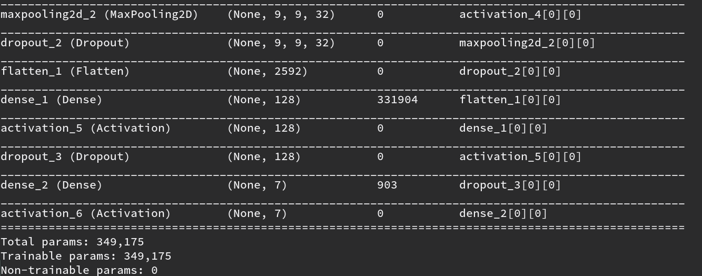

# Problem 2: Build Deep Neural Network
Problem Description:
* use the same number of parameters as above CNN, build DNN model to do the same task
* record model structure
* record training procedure
* describe what you observed
**[Note]** Specify the number of parameter in your model (no need to be absolutely the same as CNN)
## 範例
請參考<a href="./p1.html">Problem1</a>，但此題需要多描述你所觀察到的兩個model之間在訓練過程中的差別。
## TA hour
<i class="fa fa-diamond"></i> Keywords: `model.summary()`
